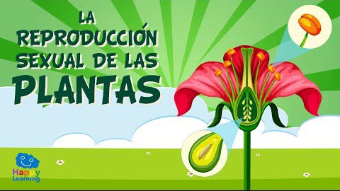
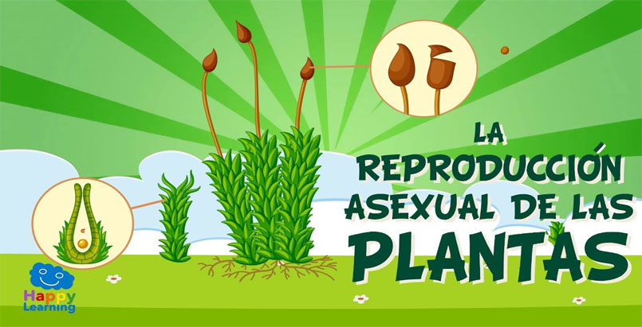

Reproduccion en las plantas
Reproduccion sexual

Reproducción sexual.
Se da en las especies que poseen floración, dado que en las flores se hallan los órganos sexuales. Algunas plantas son hermafroditas (poseen ambos sexos) mientras que otras poseen un sexo definido.
En ambos casos se requiere de la polinización: el intercambio de granos de polen desde los órganos masculinos a los femeninos (de la misma planta o de otra distinta) para fecundar los óvulos dentro del pistilo. Esta inseminación puede ocurrir por acción del viento o de animales que se alimentan de las flores, como las abejas.
Posteriormente se forma una semilla (un óvulo fecundado) y a su alrededor una fruta de algún tipo, que contiene al embrión listo para que germine un nuevo individuo, cuando las condiciones externas le sean favorables.
Reproduccion asexual

Reproducción asexual.
Este modo de reproducción no requiere de flores ni polinización, sino que echa mano a otras partes de la planta. Estos mecanismos carecen de variabilidad genética y producen individuos clónicos, en vez de individuos originales. Existen diversos modos asexuales de reproducción vegetal, tales como:
Estolones.
La planta produce tallos horizontales, al extremo de los cuales surge una nueva planta, conectada con su progenitora como mediante un cordón umbilical. Al entrar en contacto con el suelo, la nueva planta forma raíces propias y comienza a romper el estolón para ganar su autonomía.
Rizomas.
Estos son tallos subterráneos que crea el progenitor y que se alejan de él hasta permitir un nuevo brote, manteniendo sin embargo todos los individuos conectados, como una colonia. Esto hace difícil distinguir entre la primera generación de individuos y la segunda.
Tubérculos.
Otro tipo de tallos subterráneos que genera el progenitor, a veces mediante semillas, y que luego engrosan, almacenando sustancias nutritivas, hasta germinar nuevos individuos que entonces brotan de la tierra